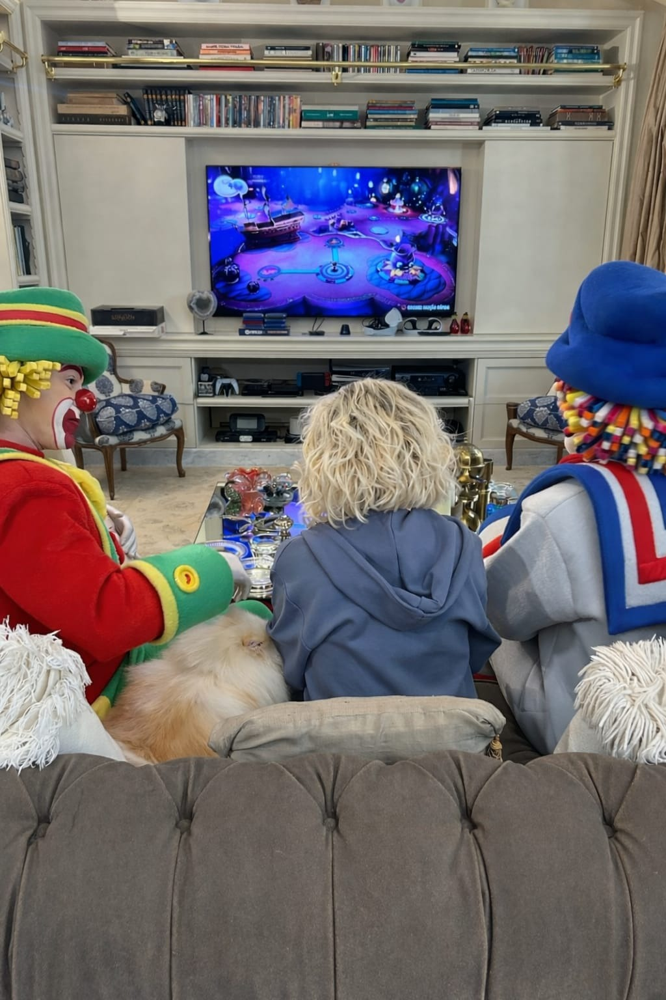

Ana Maria Braga & Frutap
Branded content · 2025 · Produção, maquinário, teleponto e pós-produção
Produção de conteúdo para as redes sociais oficiais de Ana Maria Braga em parceria com a Frutap. Atuei na montagem e operação de set, coordenação de equipe, operação de teleponto, tratamento de imagem, legendagem, postagem e pós-análise de desempenho.
Assistir projeto ↗O projeto exigiu organização e agilidade em um set real com presença de talento de alto perfil. Fui responsável pela montagem do maquinário de iluminação, posicionamento e operação de câmera, instalação e operação do teleponto durante a gravação, além da coordenação logística da equipe no dia de produção.
Na pós-produção, fui responsável pelo tratamento de imagem final, legendagem, postagem nas plataformas digitais da apresentadora e pós-análise de desempenho do conteúdo, otimizando a entrega para o formato vertical de Instagram Reels.